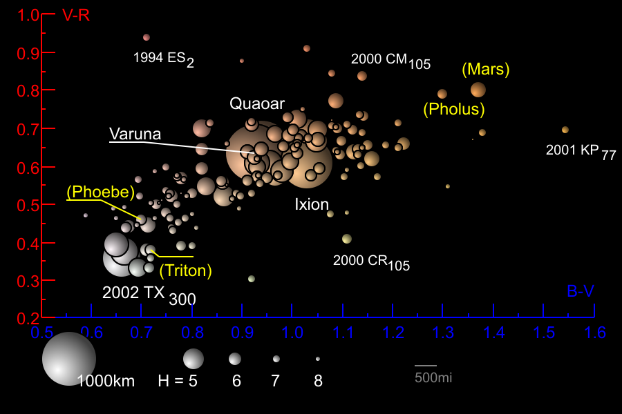
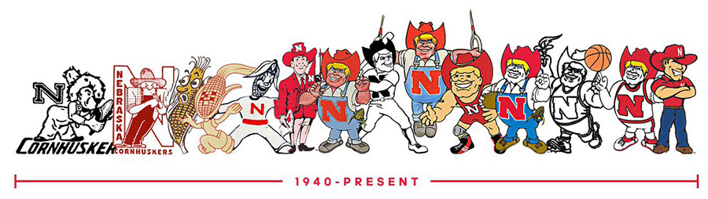

All rights to the following are reserved by the Phobos Foundation.
Sam Phobos - 2020.
The Phobos Plan
It's time we start managing our Copernican System!

Considering Newton's Laws and current age of the system the major planets have long
settled into equilibrium orbiting and spinning in same direction.
Well with the exception of Venus and Uranus.
Simply put Venus spins in the wrong direction if much at all. Uranus acts like
it tipped over - decently recently. Ceres and the asteroid belt are choas.
There are
TNOS (Trans Neptonian
Objects) orbiting the outer system that Newton's Laws
can't explain.
Whether the current chaos is intentional or not, it's time to move some mass!
Reliable and affordable docking technology
used to supply space stations can attach to asteroids and guide them into a merging orbit with a moon
lifting the orbit and increasing the mass.

The nutrients life feeds on are complex carbon chains.
The highest energy form of these molecules are hydrocarbon molecules.
This nutrient has been renewable for most of history until the industrial age started.
Breaking down oleum continues to form abundant hydrogen and carbon renewing the atmosphere.
The Earth is made up of multiple layers
These layers spin and compress at slightly different rates having significant planet localized energetic effects.
One is the Earth's magnetic field the other is the Earth's abiogenic high energy molecule creation.
Earth's primary renewal of hydrocarbons occurs from tectonic and layer slippage.
Molecules trapped on pockets containing lower energy molecules are over energized and trapped in pockets.
The most important of these molecules are oleum and pure water.
Luna and Earth
The Earth's rotation is responsible for the latitudal mountains,
i.e. the mid Atlantic.
Luna is responsible for the depressions (tectonic plates) and an increated flattening
of mountains. This results in depressions like the Pacific Ocean that contained
thickest atmosphere during the formation of the atmosphere.
Existing conditions showing significantly higher amounts co2 have little effect on the temperature,
but they are a sign of a vast increase in petroleum consumption - which is a huge contributor to
the warming. Consider the surface of the Earth as being very similar to your
living room at a stable temperature. Start a space heater - that's where we're at.
Good news is once it warms up enough to melt all the glaciars and there is very little
habitable land left - it'll be plenty to support the tiny population that can survive
on the remaining oleum until they renew.
Phobos and Mars
Olympus Mons
is 2.5 times higher than Mt Everst.
also contains a small depression on the opposite side along the equator called
Orcus Patera.
As Phobos grows in mass, this depression will increase and become the first place
liquid water can exist in equilibrium with the environment. As this depression becomes
larger, the plate that creates it will loose equilibrium and begin to move - increasing
surface plate tectonic activity on Mars.
Luna is our perpetual energy machine.
Such as the Earth exerts a force that keeps the moon in its orbit through centripetal acceleration, following a
circular path, the moon exerts a force on the Earth.
Luna act as a co2 scrubber - ultimately converting the lowest energy carbon molecule all the way back into the
highest energy forms.
Mars needs renewable oleum for it's atomsphere and nutrients to support abundent life.
Phobos is the largest moon Mars has and hence is the to aggregate asteroids to.
Galatic spaceships
No ship can detect incoming particles or sheild from them.
Another option is use a lead blocker large enough to absorb the particles
while hopping between solar systems. While a while line of blockers is
always preferred, a single blocker can be used to get the job done.

The name of this formation Kaepernick
Kaepernick sacrificing all of his personal glory when at his peak to clear the way for others
- with no guarantee of success. Well how could you leave the Copernican System (or visit)
without some shielding. Well heck, a Kaepernick could get it done if used in a formation.
Anyone that values their people's quality of life at the expense of their own -
and even to exteme sacrifice is a person I want on my team.
Reasonable Adjustment
The porportion of non white people in jail for by and large the same actions is out
of equilibrium. This is something that has happened during our lifetimes,
has current human caging effects.
Corrective actions could be taken to restore the equilibrium by
any governor in the US tomorrow.
Political Reward!
Someday very soon a governor will take actions to restore the equilibrium.
Phobos will be renamed once and permantly after this governor.
The biggest fail where we can still change the outcome

Not every moon is the same - some are more scarey then others. If we see one this
fierce and sharp now, we don't have a chance.
We need to observe current conditions
and make changes for the future - or the shooting star we did get to see will go to waste.
Humans are good and we're doing the right thing.
Humans cannot sustain the rate of warming the Earth is experiencing and
hydrocarbon store reduction. The Earth's temperature will return to equilibrium
after radiating off the excess heat created by nuclear energy and digging up future hydrocarbons.
Humans are surging
Is it time to colonize Mars? Do we have a visitor? Do we need eject a ark?
We've been here a long time having fun fighting and fucking - but quite probably
someone or something knows more then we do. We're waking up very quickly. Is it
time for one or all of these? What the heck, since we're waking up - let's snag
some farms on Mars.
Naming and Property Rights
All stocks (current and future) of petroleium on Mars generated by Phobos
are not significant and the foundation considers it first
come first serve to those that mine it.
Naming aggreagated Copernican objects
When merging two Copernican the resulting body retains the name of the larger body before merge.
Once an named aggregating object becomes 2x or more it's original size, it is given a new name.
Ownership rights to such aggreated objects will be portioned out to the aggreators.
In the case of Phobos, once it's name changes (more on the name below) - it will get a new name.
All oleum generated after this point will be the property of the Phobos Foundation.
Special exception for planet currently named Mars
Once Mars is producing enough renewable oleum to sustain permanent human life, it will be
renamed to New Nebraska.
Defending our property
The Phobos Foundation is forewarning the active defense of it's property against all
manned and unmanned expeditions. The Phobos Foundation will govern all
consumers and operations related to the oleum mining and usage on Mars.
The Phobos Foundation is a Copernican system entity and does abide by any Earth based regulations.
New Nebraska Royal Family
Herbie Husker and his descendents will be the royal family of Mars.
Here are some images of kings from Nebraska's past.
